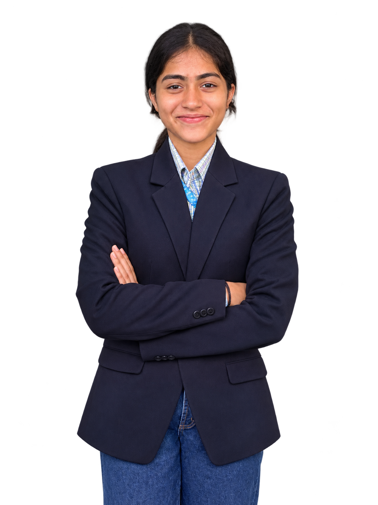
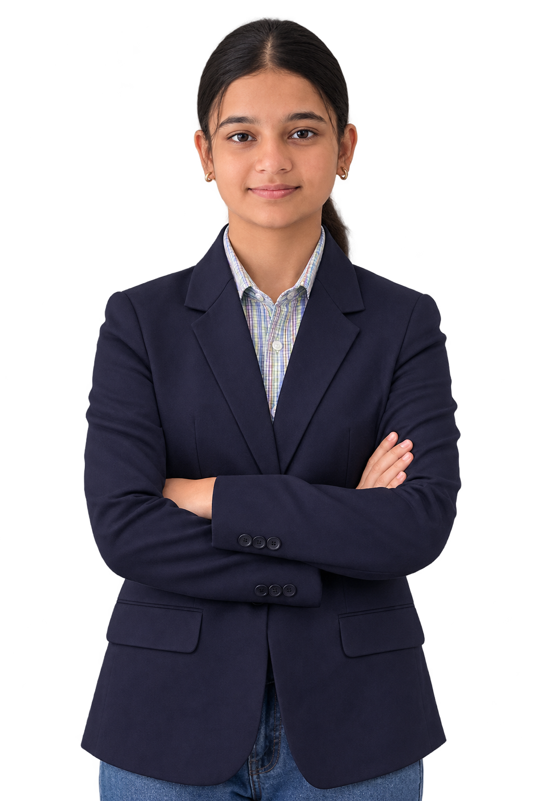

ULTRASENSE / PROJECT EXPLORER
Choose a section.
Explore the problem, the idea, the prototype and the team.
01 / THE CHALLENGE
The real cost of a hidden leak.
Hidden water leaks can damage walls and finishes before the source is clear. The figures below are reproduced from the UltraSense project deck.
Repair often means more than fixing a pipe.
Wall painting can reach ₹50/sq.ft.; modern panelling and wallpaper can range from ₹150–₹2,000/sq.ft. The deck also lists masonry, carpentry, labour and material as added cost drivers.
Less guesswork. Better-targeted inspection.
Traditional diagnostics may involve repeated checks and exploratory drilling. UltraSense explores a mapped scan that could help guide where a person investigates next.
300 million litres per day
A figure quoted in the deck’s research slide for water lost to theft and leaks. The original article citation should be confirmed before public use.
Source note: figures are from the supplied project presentation and have not been independently verified here. Keep the study citation and calculation method with any public use.
02 / EXISTING SOLUTIONS
What current methods leave open.
The project deck compares common inspection approaches and identifies a gap for affordable, non-invasive and easy-to-use location guidance.
Look for visible signs
- Can find visible dampness
- May miss hidden leaks
Check for pressure drops
- Can indicate a system leak
- Can be time-consuming and disruptive
Find dense objects
- Can detect metal or dense materials
- May not identify the exact leak location
Read temperature patterns
- Can provide internal mapping
- Can be expensive or less accessible
THE GAP ULTRASENSE EXPLORES
A portable scan with a clear visual map.
UltraSense is a prototype concept. Real-world detection performance and comparisons require controlled testing against these methods.
Comparison and limitations reproduced from the project deck; they are not a current independent market review.
03 / INTERACTIVE SIMULATION
Scan the wall. Follow the pipe.
Plant a sample fault, sweep the wall grid, and watch a candidate zone appear in the pipe view.
3D wall and pipe viewDRAG TO ROTATE · SCROLL TO ZOOM
0% scanned
Illustrative map · Drag to rotate · Scroll to zoom
Scanner readout SIMULATED VALUES
PIPE INTACTACOUSTIC TRANSIT
Distance18.0 cm
Variation+0.00 cm
Confidence96%
Coverage0%
Grid cell0, 4
Baseline18.0 cm
Rule-based repair guide
STANDBYAdvisor ready
Start the sample sweep to see how a mapped anomaly might be reviewed.
- Sample hotspot appears after the sweep.
- Run a sweep to map sample readings.
- Use the marked zone as a starting point for inspection.
TOOLS: inspection marker · pipe access tools
Sample readouts and the fault location are generated for demonstration. This simulation does not measure a real wall or validate detection accuracy.
04 / THE IDEA
A clearer inspection path.
UltraSense explores a non-invasive way to locate possible pipe routes and leak zones before opening a wall.
The concept combines ultrasonic sensing, position tracking and a visual map. The scan and diagnosis shown online are illustrative; real-world performance remains to be validated.
Send an ultrasonic pulse
A sensor sends a pulse and listens for a returning echo.
Review the change
Compare readings with a baseline and flag possible anomalies.
Place readings on a grid
Associate scan data with a wall location for visual review.
Support the next check
Use a marked zone to direct a technician’s further inspection.
What the interface is designed to show
Scan positionWall gridPipe routeSample anomalyGuided next steps
What still needs proving
Accurate inspection through different wall materials requires controlled tests, calibration and comparison with known pipe and leak conditions.
05 / THE PROTOTYPE
See the physical build.
Prototype demonstration supplied with the UltraSense project materials.
Ultrasonic sensor + microcontroller + web visualization
The project deck describes an ESP32 or Arduino controller connected to an ultrasonic sensing setup and a web app for scan mapping.
Hardware video and browser simulation are separate.
The simulation on this site uses generated data. It is not a live view of the hardware and does not prove through-wall detection accuracy.
06 / TECHNOLOGY FRAMEWORK
From sensor input to visual review.
Project architecture and technologies described in the UltraSense materials.
Ultrasonic input
HC-SR04 / JSN-SR04T sensor concepts provide echo readings.
ESP32 / Arduino
Microcontroller samples readings and sends telemetry over USB serial or planned Wi-Fi.
FastAPI service
Python backend coordinates incoming data and sends live updates.
Rule-based review
Prototype logic compares readings and flags possible changes.
Wall grid
Scan points are placed on a grid for quick sector review.
Pipe visualization
Three.js concept view represents a hidden pipe route and scan progress.
Repair guide
Rule-based suggestions describe next inspection steps and tools.
Web application
Browser interface for scan visualization and project demonstration.
Wireless operation depends on the firmware and bridge implementation; it should not be presented as available unless demonstrated.
07 / USERS & USE CASES
Who could use a mapped inspection.
Target groups and use cases proposed in the team deck.
Homes & apartments
Check hidden pipe routes and possible leak zones before renovation or drilling.
Offices, malls & hotels
Support facility teams with targeted inspection planning.
Factories & plants
Explore inspection mapping for larger facilities and critical infrastructure.
Urban infrastructure
Long-term idea for infrastructure planning and maintenance.
Renovation & drilling safety
Locate hidden pipes and wiring before drilling or cutting.
Water-leak investigation
Explore possible early-stage leak locations in walls, floors and ceilings.
Infrastructure mapping
Concept for mapping hidden routes and supporting maintenance planning.
150M+Potential users in India · deck estimate
₹45,000 Cr+Addressable market · deck estimate
Direction onlyMarket sizing requires its methodology and sources.
08 / IMPACT & SDGs
Designed around less disruption.
Potential impact scenarios and targets presented by the team; these are projections, not measured UltraSense results.
Clean water
Support efficient water management by investigating leaks earlier.
Industry & infrastructure
Explore an innovative inspection tool for infrastructure maintenance.
Sustainable cities
Support safer, better-maintained buildings and services.
Responsible consumption
Reduce avoidable demolition and construction waste.
All percentage outcomes are team projections from the presentation, not validated product performance.
09 / BUSINESS MODEL
A scalable service concept.
Business model and unit economics reproduced as targets from the team deck.
Map possible leak zones with less disruption.
Real-time detection concept · 2D/3D fault mapping · rule-based analysis and repair guidance · portable installation concept.
Homes to infrastructure.
Residential, commercial, industrial and municipal users. Proposed channels include online and retail sales, B2B pilots, partnerships and mobile/web tools.
Device plus services.
Device sales, premium analytics subscriptions, B2B solutions and installation or maintenance partnerships.
₹1,999–₹2,499Average selling price · target
₹950Cost of goods sold · target
52–64%Contribution margin · target estimate
Prices, margins and market estimates are business-plan assumptions from the deck; they are not validated commercial results.
10 / USP & FEASIBILITY
Design goals and engineering challenges.
These are intended differentiators and mitigation plans from the project deck, not verified product claims.
Make possible fault zones easier to find.
Design goal: use position-linked readings to guide further inspection.
Explain the scan.
Design goal: surface candidate changes and suggested next checks.
Show a clear map.
Design goal: use a color-coded 2D grid and a 3D pipe view.
Keep the workflow portable.
Design goal: make the interface easy to understand and operate.
Support follow-up reporting.
Design goal: connect the scan view to a computer or mobile interface.
Validate before scaling.
Prioritize sensor calibration, material testing and reliable repeatable results.
| Challenge | Planned mitigation |
|---|---|
| Sensor accuracy | Use higher-precision sensors and calibrate across wall types. |
| Wall-material interference | Build a material test library and investigate signal correction. |
| Real-world reliability | Run controlled trials, validate the data and iterate. |
11 / THE PEOPLE
Meet Team UltraSense.
Names and roles follow the supplied project presentation.

Founder · CEO · CTO
Jeshna Mehta
CCO · Visual Design Lead
Vedansshi Shah
CBO · CFO
Kashv Chandel

CSMO · Social Media & Content
Chahat Mehta
12 / ABOUT US
See beyond the walls.
UltraSense is a student engineering project exploring clearer ways to inspect hidden pipe routes and possible leak zones.
Less guesswork around hidden pipes.
Explore an ultrasonic sensing workflow paired with position tracking and visual mapping.
Udgam School for Children
Ahmedabad, Gujarat.
Ms. Krupali Sanghvi
Mentor supporting Team UltraSense through the project journey.
ACKNOWLEDGEMENT
Thank you to our school, mentor and everyone who has guided, supported and encouraged us throughout this journey.
Principal · Ms. Sharmishtha SinhaVice Principal · Ms. Urvi Bhatt
13 / FUTURE ROADMAP
Build. Validate. Extend.
Planned stages from the project deck; timing is indicative.
Prototype the scan workflow
Ultrasonic sensing, basic fault-zone mapping and an initial web interface.
Improve detection
Collect inspection data, test wall materials and improve calibration.
Explore predictive mapping
Investigate learned analysis and automatic pipe-route visualization.
Integrate with buildings
Explore smart-line integration and automatic water isolation concepts.
Future functions depend on validated sensing performance, safety engineering and additional development.